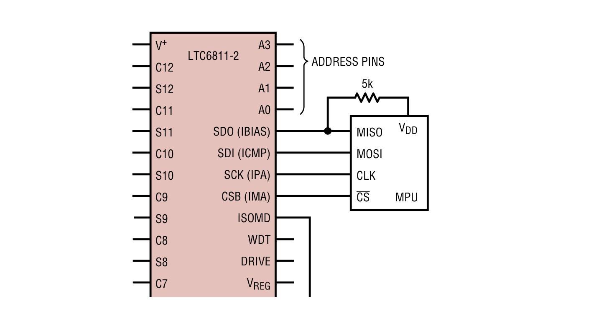
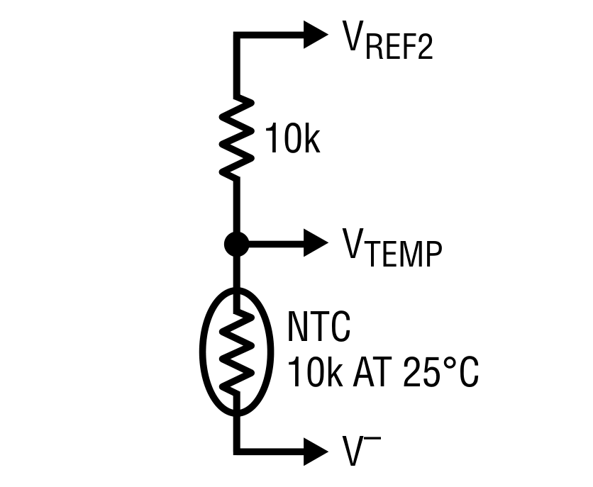

Kurulum ve Başlangıç
LTC6811 BMS kütüphanesini projenize entegre etme adımları
Donanım Bağlantıları
1. LTC6811 Bağlantı Şeması
Tipik bir LTC6811 bağlantı şeması aşağıda gösterilmiştir:

LTC6811'in ana bağlantı noktaları:
- V+ ve V-: Besleme girişleri
- C0-C12: Hücre ölçüm pinleri
- S1-S12: Hücre dengeleme pinleri
- GPIO1-5: Genel amaçlı giriş/çıkış pinleri (sıcaklık sensörleri vb. için)
- SPI Arayüzü: CSB, SCK, SDI, SDO (4-wire SPI) veya isoSPI portları
2. SPI Bağlantıları
LTC6811 ile mikroişlemci arasındaki SPI bağlantısı:
| Mikroişlemci (STM32) | LTC6811 | Açıklama |
|---|---|---|
| SPI_MOSI | SDI | Veri çıkışı (master→slave) |
| SPI_MISO | SDO | Veri girişi (slave→master) |
| SPI_SCK | SCK | Saat sinyali |
| GPIO (Çıkış) | CSB | Chip select (aktif-düşük) |
SPI parametreleri:
- Mod: SPI Mode 3 (CPOL=1, CPHA=1)
- Maksimum saat frekansı: 1 MHz
- İlk bit: MSB
3. isoSPI Bağlantıları (Zincir Yapı İçin)
Uzun mesafeli veya gürültülü ortamlarda isoSPI kullanılması önerilir:
- Zincirin ilk elemanı: LTC6820 ile standart SPI → isoSPI dönüşümü
- LTC6811-1 cihazları: Port A ve Port B kullanılarak seri zincir şeklinde bağlanır
- 100 metreye kadar izole iletişim sağlanabilir
- CAT5/CAT6 bükümlü çift kablo kullanılması önerilir
4. Sıcaklık Sensörleri
NTC termistörler ile sıcaklık ölçümü bağlantısı:

Tipik bir NTC sıcaklık sensörü kurulumu:
- VREF2 (3V) → 10kΩ direnç → NTC → V- (GND)
- GPIOx bağlantısı NTC ve direnç arasına yapılır
- Her GPIO pinine bir sıcaklık sensörü bağlanabilir
Yazılım Kurulumu
1. Kütüphane Dosyalarını Ekleme
Projenize aşağıdaki dosyaları ekleyin:
genericType.hvegenericType.cparseCreate.hveparseCreate.cdataSetList.hcommandList.happlication.hveapplication.cwrapper.hvewrapper.c
2. MCU-Bağımlı Kodları Uyarlama
wrapper.c dosyası, kullandığınız mikroişlemciye uygun şekilde düzenlenmelidir:
// SPI yapılandırması örneği (STM32 için)
void initSpiHandle() {
hspi1.Instance = SPI1;
hspi1.Init.Mode = SPI_MODE_MASTER;
hspi1.Init.Direction = SPI_DIRECTION_2LINES;
hspi1.Init.DataSize = SPI_DATASIZE_8BIT;
hspi1.Init.CLKPolarity = SPI_POLARITY_HIGH;
hspi1.Init.CLKPhase = SPI_PHASE_2EDGE;
hspi1.Init.NSS = SPI_NSS_SOFT;
hspi1.Init.BaudRatePrescaler = SPI_BAUDRATEPRESCALER_64;
hspi1.Init.FirstBit = SPI_FIRSTBIT_MSB;
hspi1.Init.TIMode = SPI_TIMODE_DISABLE;
hspi1.Init.CRCCalculation = SPI_CRCCALCULATION_DISABLE;
hspi1.Init.CRCPolynomial = 10;
HAL_SPI_Init(&hspi1);
}
CS pinini kontrol eden fonksiyonları düzenleyin:
void ltcCSLow(void) {
HAL_GPIO_WritePin(LTC_CS_PORT, LTC_CS, GPIO_PIN_RESET);
}
void ltcCSHigh(void) {
HAL_GPIO_WritePin(LTC_CS_PORT, LTC_CS, GPIO_PIN_SET);
}
3. Yapılandırma Ayarları
LTC6811 tipine göre wrapper.h dosyasında doğru ayarı yapın:
// LTC6811-2 kullanılıyorsa 1, LTC6811-1 kullanılıyorsa 0
#define LTC6811_2_USED 1
Genel yapılandırma ayarları için application.c dosyasını düzenleyin:
void initLTC(void) {
initSpiHandle();
bms_ic[0].ic_address = 0x00; // İlk cihaz adresi
// ADC ve referans ayarları
setCofA_ADCOPT(&bms_ic[0], 0); // Normal modlar
setCofA_DCTO(&bms_ic[0], TIMEOUT_2MIN);
setCofA_REFON(&bms_ic[0], REF_ON);
// Gerilim eşikleri
setVoltageThresholds(&bms_ic[0], 3.2, 4.2); // UV ve OV değerleri
// GPIO yapılandırması (tüm GPIO'lar aktif)
setAllGPIO(&bms_ic[0], 0xFF);
// Yapılandırmayı uygula
createConfigA(&bms_ic[0]);
ltcWakeUp(1);
spiWriteData(bms_ic[0].ic_address, WRCFGA, bms_ic[0].ic_register.tx_data);
}
4. Temel Okuma Örneği
Ana programınızda aşağıdaki gibi bir döngü kullanabilirsiniz:
int main(void) {
// Sistem başlatma
SystemInit();
// BMS cihazını başlat
initLTC();
// Ana döngü
while (1) {
// Hücre voltajlarını oku
readCellVoltages(ADC_7_KHZ, DCP_DISABLED, CH_ALL);
// Sıcaklık sensörlerini oku (GPIO'lar üzerinden)
readAuxVoltages(ADC_7_KHZ, GPIO_1_5_2REF);
// Durum registerlarını kontrol et
readStatusRegisters();
// İşlemleri gerçekleştir
// ...
// Gecikme
HAL_Delay(1000);
}
}
Sorun Giderme
Genel Sorunlar
Karşılaşılabilecek yaygın sorunlar ve çözümleri:
| Sorun | Olası Neden | Çözüm |
|---|---|---|
| İletişim yok | SPI ayarları yanlış | SPI modunu kontrol edin (Mode 3 olmalı) |
| PEC hataları | Gürültülü ortam veya hatalı bağlantı | Kablo uzunluğunu azaltın, filtreleme ekleyin |
| Hücre ölçümleri hatalı | C pinleri veya filtreler yanlış bağlanmış | RC filtre değerlerini kontrol edin (100Ω/10nF önerilen) |
| Açık kablo tespiti çalışmıyor | Pin kapasitansı çok yüksek | ADOW komutunu filtrelenmiş modda çalıştırın |
| İç sıcaklık yüksek | Yüksek balans akımı | Balans akımını azaltın veya harici transistörler kullanın |